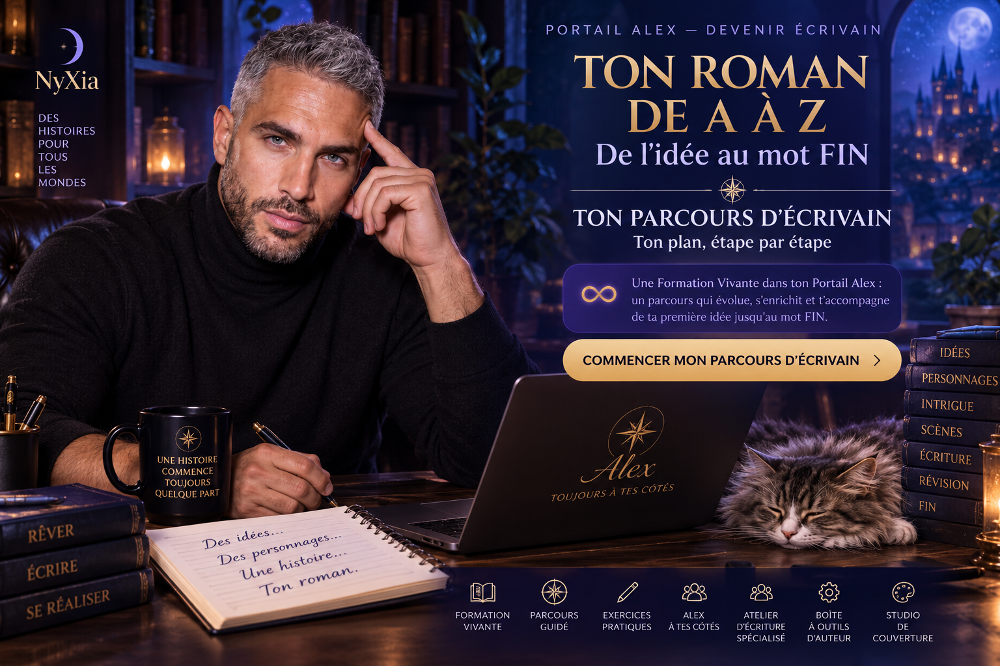
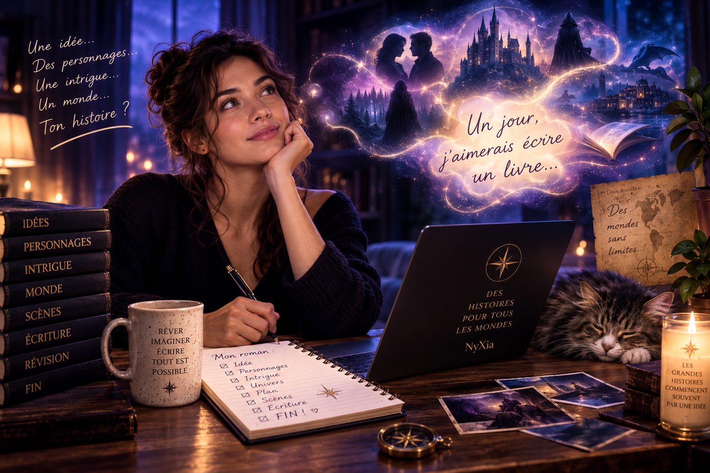
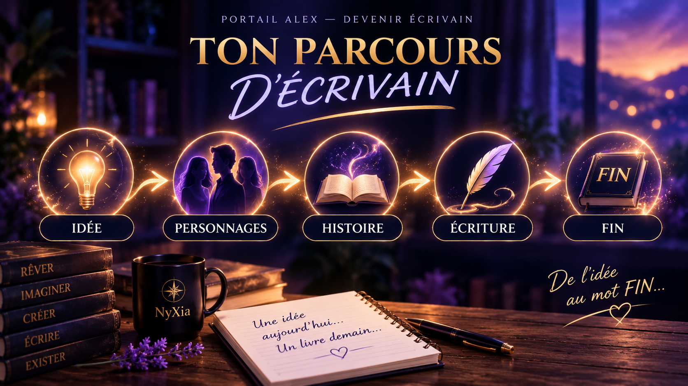
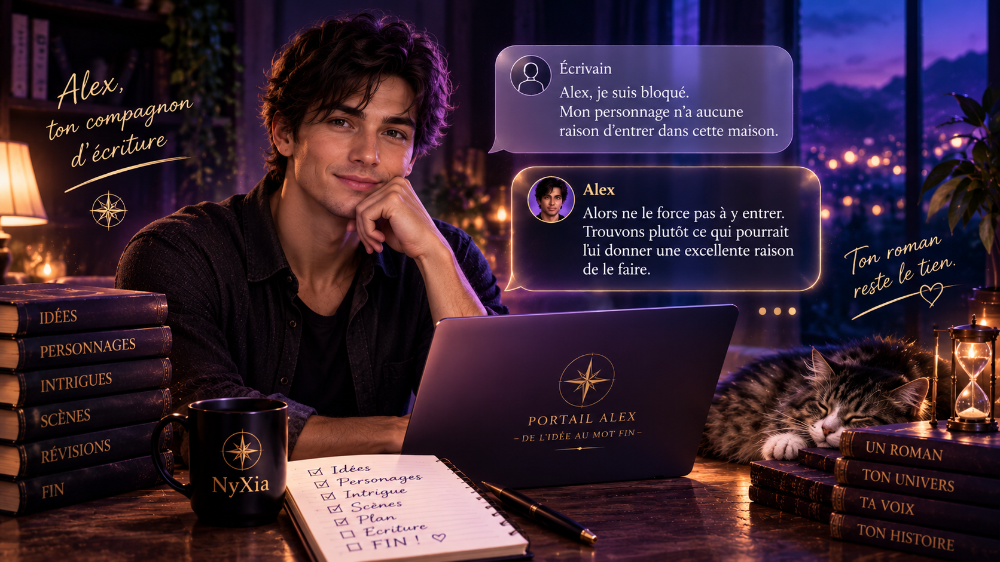
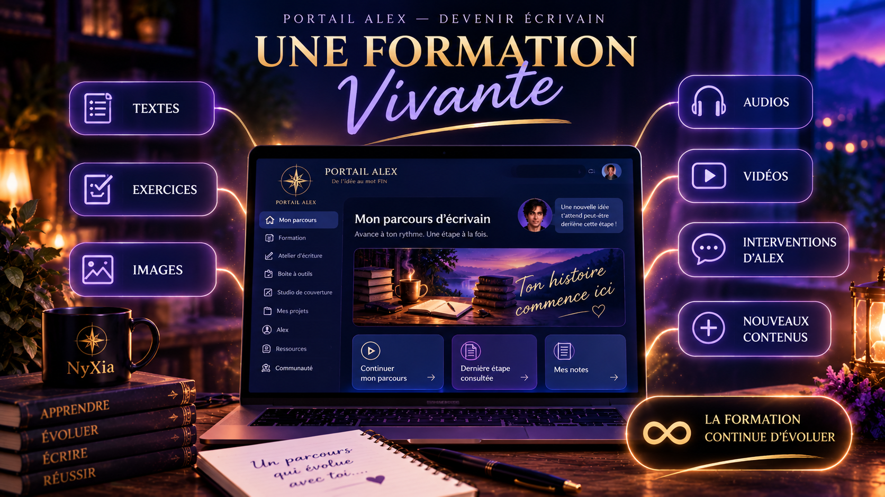
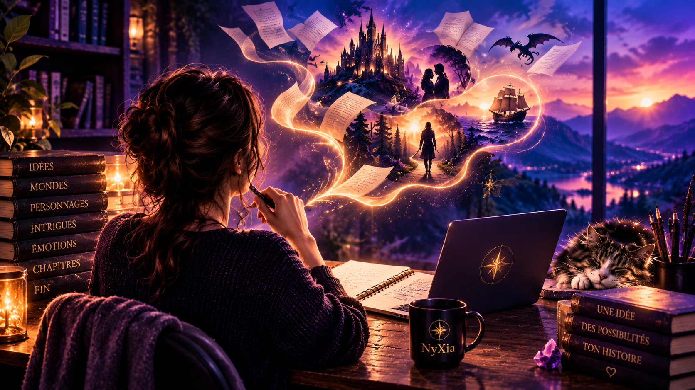
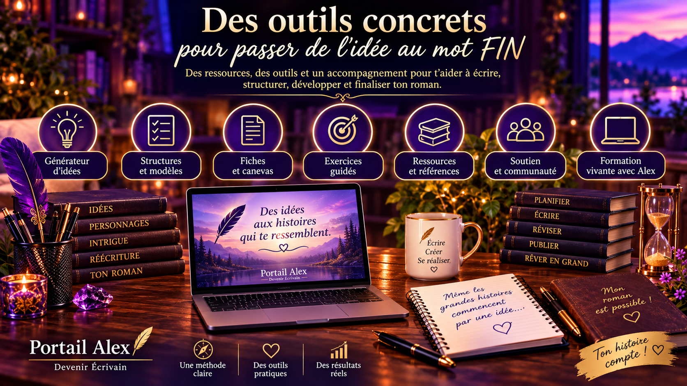
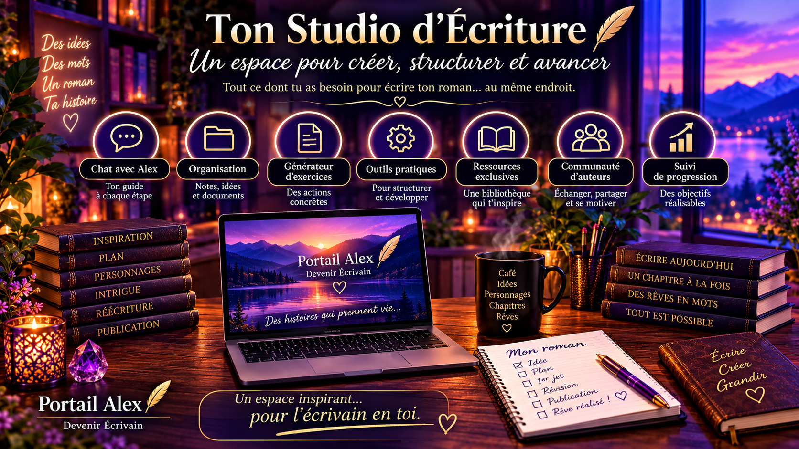

NyXiaL'univers
NyXiaL'univers
NyXiaL'univers
NyXiaL'univers
TON PARCOURS D'ÉCRIVAIN — Ton plan, étape par étape
Une Formation Vivante dans ton Portail Alex : un parcours qui évolue, s'enrichit et t'accompagne de ta première idée jusqu'au mot FIN.

Tu as une idée de roman qui te trotte dans la tête?
Ou peut-être as-tu simplement cette envie qui revient encore et encore :
Mais entre avoir envie d'écrire un roman et réussir à écrire FIN sur la dernière page, il y a tout un chemin.
Trouver la bonne idée.
Créer des personnages crédibles.
Construire une intrigue.
Éviter les incohérences.
Écrire des dialogues naturels.
Maintenir le rythme.
Traverser les moments où l'inspiration disparaît.
Réviser. Corriger. Améliorer.
Et surtout…
C'est exactement pour cela que le Portail Alex — Devenir Écrivain a été créé.
Tu as besoin de savoir quelle est ta prochaine étape.
Avec TON ROMAN DE A À Z — De l'idée au mot FIN, tu avances progressivement dans la création de ton roman.
Pas besoin d'essayer de comprendre tout le métier d'écrivain en même temps. Alex t'accompagne à travers un parcours structuré qui te permet de construire ton histoire morceau par morceau.
Une étape.
Puis la suivante.
Puis encore une autre.
Jusqu'à ce que ton idée devienne une véritable histoire. Et que cette histoire devienne enfin…


Ton parcours t'accompagne dans les grandes étapes de la création d'un roman.
Apprendre à reconnaître les idées qui méritent d'être développées et choisir celle qui deviendra ton histoire.
Comprendre ce que tu veux raconter et poser les premières fondations de ton univers.
Construire des personnages avec une personnalité, des motivations, des contradictions, des forces et des failles.
Transformer ton idée en une histoire qui avance, évolue et donne envie de continuer à lire.
Créer une structure suffisamment claire pour savoir où tu vas, sans emprisonner ta créativité.
Donner vie à ton histoire à travers les actions, les émotions, les descriptions et les dialogues.
Trouver progressivement ta voix d'auteur et apprendre à rendre ton écriture plus vivante.
Savoir quoi faire lorsque tu ne sais plus comment continuer une scène ou que ton histoire semble s'essouffler.
Prendre du recul sur ton texte, repérer ce qui fonctionne et améliorer ce qui doit l'être.
Parce qu'un roman ne se construit pas en une seule immense étape. Il se construit une décision, une scène et une page à la fois.

Alex n'est pas simplement là pour te donner des informations sur l'écriture. Il est ton compagnon d'écriture.
Tu peux lui parler pendant ton parcours. Tu peux lui présenter ton idée. Lui parler d'un personnage. Réfléchir avec lui à une scène. Lui expliquer pourquoi quelque chose ne fonctionne plus dans ton intrigue. Lui demander de t'aider à explorer différentes possibilités.
Et lorsque tu bloques devant ton histoire, tu peux simplement commencer par lui dire :
Puis reprendre le travail avec lui.
L'objectif n'est pas qu'Alex écrive ton roman à ta place.
Tes idées. Tes personnages. Ton univers. Ta sensibilité. Ta voix.
Alex est là pour t'aider à transformer tout cela en une histoire que tu peux réellement terminer.
La plupart des formations sont créées une fois. Tu achètes. Tu regardes les modules. Tu arrives à la dernière leçon. Et la formation reste exactement comme elle était le jour où tu l'as achetée.
Il vit directement dans le Portail Alex et peut continuer à évoluer, s'enrichir et grandir avec le temps.
De nouvelles explications peuvent être ajoutées. De nouveaux exercices peuvent apparaître. De nouveaux exemples peuvent venir approfondir une notion. Des images, des audios et des vidéos peuvent enrichir certaines étapes. De nouvelles ressources peuvent compléter ton apprentissage.
Et Alex peut intervenir directement à l'intérieur du parcours pour t'accompagner dans ce que tu es en train d'apprendre.
Tu n'achètes donc pas simplement une série de leçons.
Une formation conçue pour continuer à évoluer plutôt que de rester enfermée dans la version du jour où elle a été créée.

Lorsqu'un nouveau contenu est intégré à ton parcours, il vient enrichir l'environnement dans lequel tu apprends déjà. Tu reviens dans ton Portail Alex et ton univers d'apprentissage peut continuer à grandir avec toi.
Parce que l'écriture elle-même est vivante. Les questions évoluent. Les histoires évoluent. Les outils évoluent. Et notre façon de t'accompagner peut évoluer elle aussi.
C'est toute l'idée de la Formation Vivante NyXia. Tu n'entres pas simplement dans un cours.
Un personnage prend soudainement une direction que tu n'avais pas prévue?
Une meilleure idée apparaît au chapitre 8?
Ton intrigue ne fonctionne plus comme tu l'imaginais?

Créer une histoire n'est pas toujours un processus parfaitement linéaire. C'est pourquoi Alex peut devenir ton point de repère lorsque ton roman évolue.
Tu peux réfléchir avec lui, comparer des possibilités et retrouver le fil de ce que tu voulais raconter.
Parce qu'on n'écrit pas une romance comme un thriller. Et qu'un livre jeunesse ne demande pas le même regard qu'un roman d'horreur.
Alex est entouré d'assistants spécialisés qui peuvent t'accompagner selon l'univers que tu souhaites créer.

Relations, émotions, tension romantique, évolution des personnages et histoires d'amour.

Intrigues criminelles fictives, indices, suspects, fausses pistes, cohérence de l'enquête et révélations.

Conflits humains, profondeur émotionnelle, relations complexes et trajectoires de personnages.

Histoires destinées aux enfants, univers ludiques, personnages attachants et adaptation au jeune lectorat.

Mondes imaginaires, systèmes fantastiques, créatures, technologies fictives et cohérence d'univers.

Atmosphère, tension, mystère, inquiétude et construction du suspense.
Tu peux ainsi travailler ton roman avec Alex, puis entrer dans l'atelier spécialisé qui correspond à ton histoire lorsque tu as besoin d'un regard plus précis.
Ton Portail Alex ne s'arrête pas à la formation. Tu y retrouves également une boîte à outils d'auteur pensée pour t'aider dans ton travail d'écriture.

Selon tes besoins, tu peux travailler sur des éléments comme :
les titres de ton livre;
les mots et formulations;
la correction et l'amélioration de textes;
la recherche autour de ton projet;
la création et l'approfondissement de personnages;
l'inspiration lorsque les idées se font attendre.
L'objectif est simple :
Tu restes dans ton univers d'écriture.
Ton histoire mérite aussi une identité visuelle. Le Studio de couverture te permet de commencer à imaginer l'univers graphique de ton livre et de travailler sa présentation.

Parce qu'après avoir passé autant de temps à construire ton histoire, vient ce moment assez extraordinaire où elle commence à ne plus ressembler seulement à un manuscrit.
Elle commence à ressembler à…
Ou tu as déjà un manuscrit commencé et tu veux retrouver une direction.
Tu n'as pas besoin d'être déjà écrivain pour entrer dans le Portail Alex.
Ton premier objectif est de construire une histoire que tu auras envie de continuer demain. Puis après-demain. Puis la semaine suivante.
Chaque fois que tu avances, ton roman existe un peu plus.
Une idée devient un personnage.
Un personnage entre dans une scène.
Une scène devient un chapitre.
Les chapitres commencent à former une histoire.
Et un jour… tu arrives à la dernière page.
Tu relis la dernière phrase. Tu poses les mains sur ton clavier.
Et après toutes ces idées, tous ces personnages, toutes ces hésitations et toutes ces pages… tu écris enfin trois lettres :
Ce roman qui existait seulement dans ta tête existe maintenant devant toi.
PORTAIL ALEX — DEVENIR ÉCRIVAIN
TON PARCOURS D'ÉCRIVAIN — Ton plan, étape par étape
Tu n'as pas besoin de connaître tout le chemin aujourd'hui.
Ton histoire existe peut-être déjà quelque part dans ton imagination.